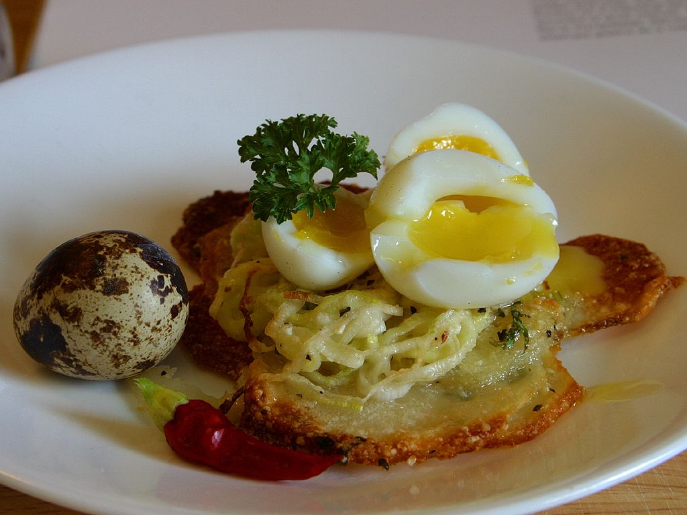

Home
Boiled Egg

Description
An egg boiled in a pot or pan
Ingredients
1 Egg
Water
Steps
Boil water tall enough to cover at least half of the egg.
Add egg when water starts to boil, then lower heat.
Cook until how you like your egg. Check notes for done-ness.
Turn off stove and take egg out of pot or pan then place in a bowl under running cold water.
Once the egg can be held without burning your fingers, peel the egg.
Notes
Toast dipping egg: 3 Minutes
Runny egg yolk: 6 Minutes
Soft boiled: 8 Minutes
Hard boiled: 10 Minutes
Don't overcook eggs. It'll be harder to peel.
You can tell if they're overcooked by the grey ring around the yolk and rubbery egg white.